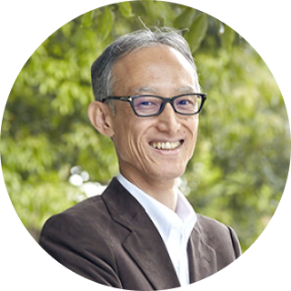
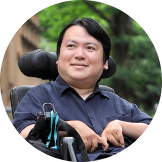
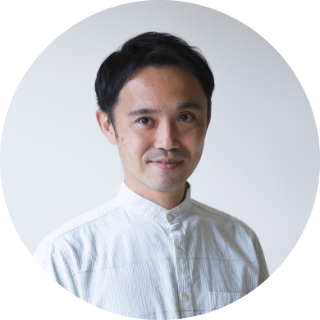

＊ 2023年度の開催は終了いたしました。 ご参加ありがとうございました。
プログラム
08/08 (Tue)
※参加費：1,000円（ワンドリンク+軽食付）
※立ち見の場合あり。
AIがもたらす幸福とは。～人工知能がもたらす未来の明と暗～
AIがもたらす幸福とは。～人工知能がもたらす未来の明と暗～
-
横山 広美
東京大学教授
カブリ数物連携宇宙研究機構
副機構長
学際情報学府兼担松尾 豊
東京大学大学院工学系研究科
教授
鎌田 富久
TomyK Ltd. 代表
08/09 (Wed)
18:00 ~ 18:45
会場：有楽町 micro
FOOD & IDEA MARKET※参加費無料
（ワンドリンク付。2杯目以降は実費となります。）
※立ち見の場合あり。ヘルスケア・医療の「エシカル消費」
19:15 ~ 20:00
会場：有楽町 micro
FOOD & IDEA MARKET※参加費無料
（ワンドリンク付。2杯目以降は実費となります。）
※立ち見の場合あり。そんなに良いところ？〜憧れのハワイの現実と課題～
-
そんなに良いところ？〜憧れのハワイの現実と課題～
矢口 祐人
東京大学副学長（グローバル教育推進）
グローバル教育センター長
大学院総合文化研究科教授
19:15 ~ 20:00
会場：GARB Tokyo
※参加費無料
（ワンドリンク付。2杯目以降は実費となります。）
※立ち見の場合あり。自動運転の民主化
-
自動運転の民主化
加藤 真平
東京大学大学院情報理工学系研究科
特任准教授
08/10 (Thu)
18:00 ~ 18:45
会場：有楽町 micro
FOOD & IDEA MARKET※参加費無料
（ワンドリンク付。2杯目以降は実費となります。）
※立ち見の場合あり。包摂的な職場つくりについて ～当事者研究の視点から～
18:00 ~ 18:45
-

-
包摂的な職場つくりについて ～当事者研究の視点から～
熊谷 晋一郎
東京大学先端科学技術研究センター
准教授
19:15 ~ 20:00
会場：有楽町 micro
FOOD & IDEA MARKET※参加費無料
（ワンドリンク付。2杯目以降は実費となります。）
※立ち見の場合あり。Material Experience Design ～物理素材を活かすインタフェースと実世界体験の創出～
-

-
Material Experience Design ～物理素材を活かすインタフェースと実世界体験の創出～
筧 康明
東京大学大学院情報学環
教授
19:15 ~ 20:00
会場：GARB Tokyo
※参加費無料
（ワンドリンク付。2杯目以降は実費となります。）
※立ち見の場合あり。空の旅の舞台裏に迫る ～航空輸送と航空交通管理の最新トレンド～
-
空の旅の舞台裏に迫る ～航空輸送と航空交通管理の最新トレンド～
伊藤 恵理
東京大学先端科学技術研究センター
教授